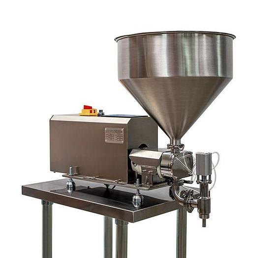

Tekli Dolum Makinesi
Hassasiyet, hijyen ve kullanım kolaylığı bir arada.

Üretim hattınızda hassasiyet, hijyen ve kullanım kolaylığını bir arada sunan tekli dolum makinemiz, özellikle akışkan ürünlerin kontrollü ve güvenilir şekilde dolumu için tasarlanmıştır.
- Loblu pompa teknolojisi sayesinde hassas ve tekrarlanabilir dolum miktarı sağlar.
- 316 kalite paslanmaz çelik hijyenik yapısı ile gıda ve hassas ürün proseslerine uygundur.
- İhtiyaca göre loadcell veya flowmetre entegrasyonu ile farklı dolum kontrol seçenekleri sunar.
- PLC ekran üzerinden kolay ayar imkanı sayesinde operatör kullanımını pratik hale getirir.
- Tak-çalıştır yapısı ile hızlı kurulum ve kolay devreye alma avantajı sağlar.
İletişim: Teknik bilgi ve teklif için +90 530 068 43 21 veya WhatsApp.